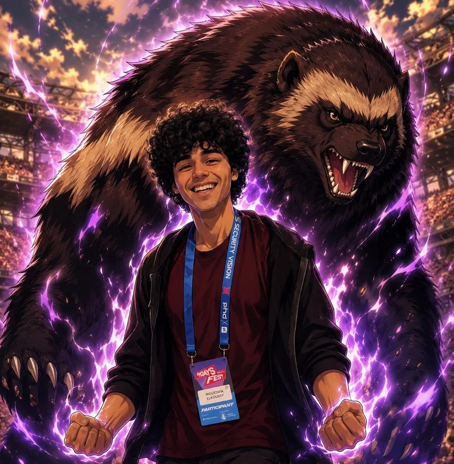

I turn bold AI ideas into real‑world products.
I build intelligent products by combining AI engineering, product thinking and full-stack development. Right now I'm an AI Marketing Engineer at Ritorica, a B2B messaging company, where I designed and built ritorica.com.
AI systems · Product engineering · From idea to deployment

Work
Four projects, each taken all the way to something that runs.

ritorica.com
I redesigned and rebuilt the company website from scratch, alone, and I keep it running. Designed in Figma, built on Django CMS and PostgreSQL, deployed to a Linux server with automatic deploys and an AI chatbot.
Read the case study ↗

AI video and image generator
My own app. A brand kit and a topic go in; short videos and image posts come out. Claude agents plan and write, Python tools render, and a QA step checks the result against the script. You watch the whole team work live.
Read the case study ↗

Website audit for Google and AI search
Paste a website, get a scored report in under a minute: what to fix for Google, answer engines and AI search like ChatGPT, ranked by impact, with code to paste in.
Read the case study ↗


Research workflow with a validator
A Claude Code workflow that writes a branded market report. The PDF won't render if any claim has no source or any link is dead. First run: 61 pages, about 190 sources, more than 400 cited claims.
Read the case study ↗
Also: system-audit, a Bash tool that checks a Linux server for common security misconfigurations.
Security basics
An AI app that can run commands needs limits. These are in the code, not just in a policy.
- AI agents get an allowlist of tools, never open shell access.
- Uploads and file paths are checked, so nobody can read files outside the app. Tests try
/etc/passwdand../and expect a refusal. - Servers run HTTPS, key-only SSH and logins with hashed passwords.
- Keys stay in
.env, and every repo is scanned for secrets before it goes public. - Containers run as a normal user, not root.
About
Engineer by training. I like work where the technical side and the people side meet.
- Now
- AI Marketing Engineer, Ritorica (since Sept 2024). Website, AI and automation for a B2B messaging platform: SMS, WhatsApp, Viber, Telegram. I also write technical specs and whitepapers, and speak with clients and partners at industry events.
- Before
- AI Content Specialist, Yandex (2024). Reviewed and corrected the Arabic answers of the Alice voice assistant, and reported accuracy problems to the product team.
- Education
- MSc Software Engineering (2025) and BSc Avionics Engineering (2023), Moscow Aviation Institute.
- Languages
- Arabic (native), English and Russian (C1).
- Tools
- Python, Claude Code, Django, FastAPI, React, TypeScript, PostgreSQL, Docker, Linux, Bash, Git, Figma.
Let's talk
The fastest way to reach me is email.